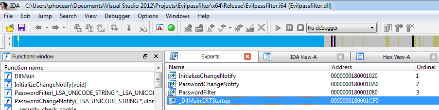

Nice stuff from @mubix: the technic consists in injecting a DLL to lsass.exe, using the password filter feature of Windows.
The password filter architecture is useful to check that a password is compliant with the system security policy. It will typically check that when a user changes his password, it follows the required complexity.
Microsoft opened the API so that users can extend the functionality with their own filters.
Mubix diverted this API by developing a password logger: the DLL just logs the password both on the disk and a remote server, and does nothing else.
A perfect way to maintain a persistent access… I tested it:

Evilpassfilter exploitation process
Evilpassfilter.dllis loaded intolsass.exe- A user updates his password
- The password goes through the Evilpassfilter password filter, which notifies the attacker through HTTP and also logs it locally.
Here is what I did to get it work (Windows 7 x64):
- Make sure the local password security policy is enabled on the target
- Create a new Win32 project in Visual Studio (2012)
- Eventually delete unnecessary files, to start with an empty project (
stadfx.hand cie) - Import the source code
- Create a
Evilpassfilter.deffile, which defines the exports:LIBRARY Evilpassfilter EXPORTS InitializeChangeNotify PasswordFilter PasswordChangeNotify
- In the project properties, make sure to select the appropriate architecture, matching with the one of your target.

Selecting the compilation target architecture (win32/x64)
- In the input settings of the link editor, add wininet.lib as additional dependancy.
- Also add
Evilpassfilter.defas module definition file.
Evilpassfilter Visual Studio settings
- In the source code, fix line 72:
return;–>return 1; - Now you should be able to compile the library. You may want to make sure that the DLL is valid and integrated the exports (open it with IDA or a PE tool):

Evilpassfilter.dll exports seen in IDA
- Copy the resulting DLL to the
system32folder. - Open regedit
HKLM\System\CurrentControlSet\Control\Lsa
and addEvilpassfilterto theNotification Packages


Reboot and… now you should know what to do next :-)

{kind=link}